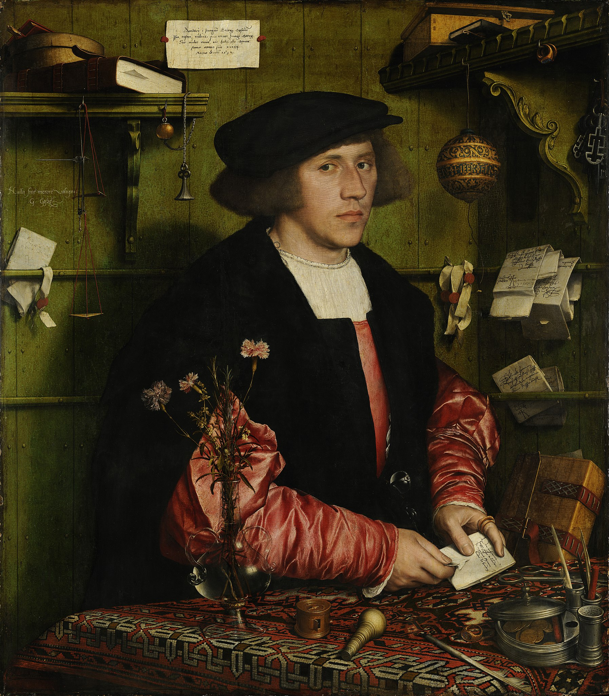
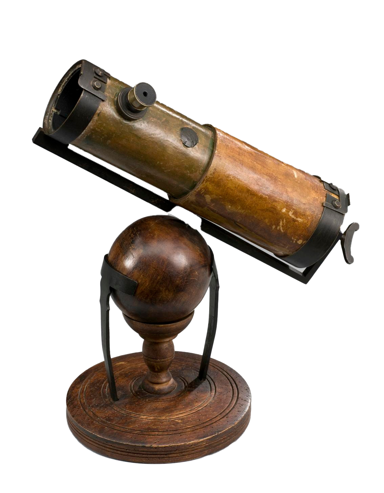
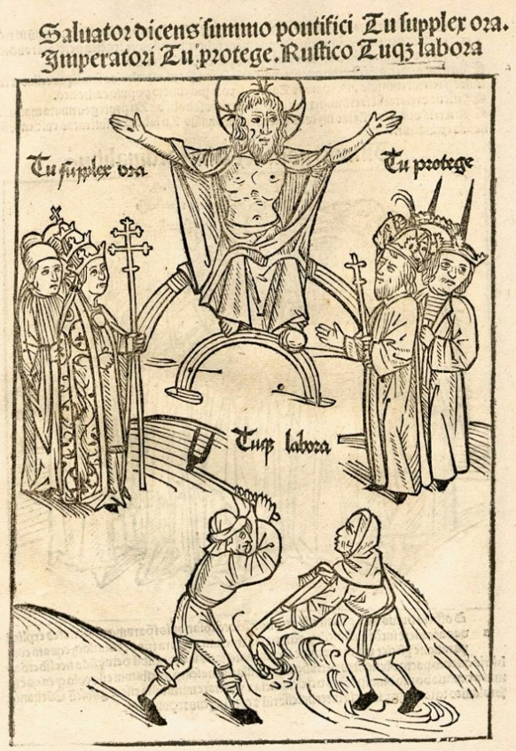
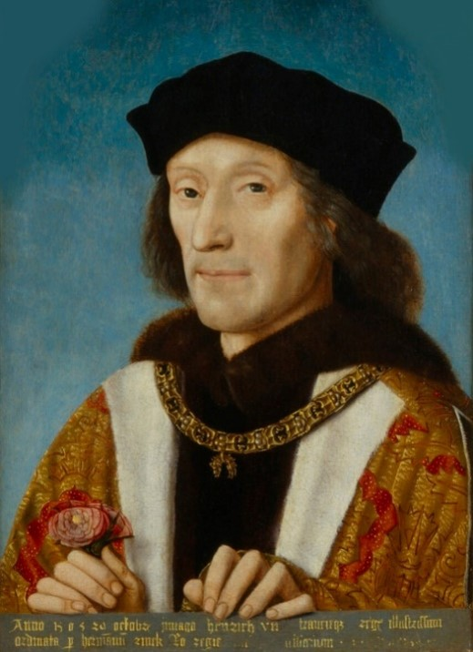
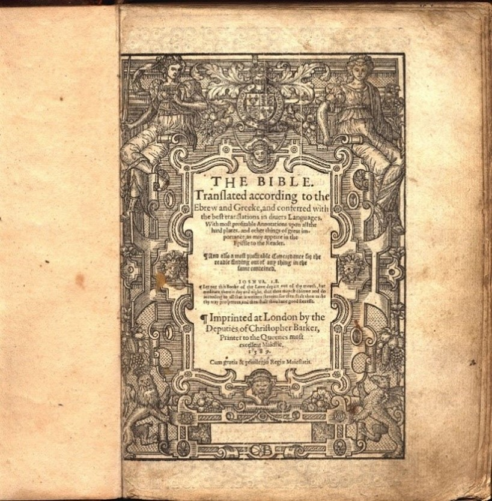

מהי המוטיבציה של שייקספיר לבטא בעזרת תיאטרון, שירה ומטאפורות את המורכבות של הזהות האנושית?
כדי לענות על השאלה הזו עלינו להכיר את השינויים האדירים שהתרחשו במאות ה-15-16 באירופה ושנתנו לתקופה
את שמה:
"תקופת הרנסנס".
אילו שינויים התרחשו באירופה בתקופת הרנסנס?
כיצד השינויים הללו באו לידי ביטוי באנגליה, בה כתב ופעל שייקספיר?
באיזה אופן תפיסת הזהות האנושית התערערה בעקבות כל השינויים האדירים הללו?
Pieter Bruegel the Elder, The Fight Between Carnival and Lent (1559)
תקופת הרנסנס
(שמכונה כיום על ידי היסטוריונים גם "העת החדשה המוקדמת" באירופה)
מצאה את חדשנותה כמעט בכל זירה ובכל תחום חיים
ובאה לידי ביטוי בשלל תמורות הכרוכות זו בזו:
כלכלה ומסחר
מעמד הסוחרים עולה
נפתחים הבנקים הראשונים
מתבססת כלכלת סחר קפיטליסטית-צרכנית: אנשי מעמד הביניים מתעשרים ומתחילים לצרוך מותרות שנועדו לראווה.

Holbein the Younger, Merchant Georg Gisze (1532)
גילוי ארצות
בשנת 1492
כריסטופר קולמבוס
מפליג מערבה במטרה לגלות דרך ימית קצרה יותר לסין והודו הרחוקות ומגיע, בלי ידיעתו, ליבשת אמריקה.
בשנים שלאחר מכן גם
אמריגו ווספוצ'י
מוביל מסעות ליבשת החדשה, שנקראת על שמו.
גילוי היבשת לא רק משנה את מפת העולם ואת תפיסת האירופאים את עצמם, אלא גם מציף שאלות קשות על יחסיות
תרבותית והאמת שבבסיס הכתבים הקדושים שלא מזכירים את ממלכת האצטקים במקסיקו.
"תיאור חדש ומקיף של כדור הארץ"
, מפת העולם משנת 1531
טכנולוגיה, מדע ורפואה
בשנת 1436
הדפוס
מומצא ומשנה ללא היכר את אוריינות הקריאה באירופה: ציבור הקוראים הולך ומתרחב גם מעבר למעמד האצולה,
שווקי
ספרים הופכים נפוצים ומתפתחת כתיבה במגוון סוגות.
פיתוחים
בהנדסה, אדריכלות ותכנון אורבני
במקביל להחייאה של שיטות בנייה רומיות עתיקות ושכלולן.
איור של מכונת דפוס

רפליקה של הטלסקופ של ניוטון
Newton telescope replica, by The Science Museum UK, under CC BY 4.0, via Wikimedia Commons
לקראת סוף המאה ה-16 הטלסקופ המודרני מומצא ומביא לתגליות משנות סדרי עולם
באסטרונומיה, המרכזית בהן היא התגלית של קופרניקוס שכדור הארץ אינו נייח ולא נמצא במרכז היקום.
גילויים איטיים אך חשובים
ברפואה
בעקבות פרקטיקות חדשות באנטומיה וניתוח גופות (שהכנסייה לרוב אסרה) לצד מסורות רפואיות עתיקות יותר.
דת
בשנת 1517
מרטין לותר
מפרסם ומפיץ (בזכות המצאת הדפוס) את
95 התזות
שלו שמערערות על הנצרות הקתולית. זו נחשבת תחילתה של
הרפורמציה
שמביאה להתפרצות מלחמות דת בכל אירופה.
מלחמות הדת מזעזעות את עולמו הפנימי של הנוצרי המאמין עד כדי משבר אמון וספקנות על גורל הנפש וערכה של
אמת דתית מוחלטת.
מלחמות הדת מביאות לתמורות פוליטיות רבות בצפון ומערב אירופה ולעלייתן של כנסיות פרוטסטנטיות, במיוחד
בגרמניה, הולנד ושוויץ ובהמשך באנגליה.
François Dubois,
St. Bartholomew Day Massacre
(1572-1584)
פוליטיקה וחברה
רעיון
האומה
מתפשט, ובמקביל
ממלכות-על ואימפריות
גדולות עולות ומביאות לסדרי כוח חדשים.
הסדר החברתי הפיאודלי
שחילק את החברה למעמדות נוקשים והיררכיים (מעמד בני האצולה הלוחם, מעמד הכמורה הלומד ומעמד האיכרים
העובד) מתערער ומתפורר.
מעמד הביניים של הסוחרים
מכניס דינמיות וגמישות ליחסים החברתיים שהופכים נוקשים פחות.

"המושיע [ישוע] אומר לכהן העליון: ‘אתה - התפלל על הברכיים’; לשליט: ‘אתה - הגן’; ולאיכר: ‘ואתה -
עבוד’"
,
איור גרמני של שלושת המעמדות של חברת ימי הביניים (1492)
תרבות, חינוך ומחשבה
בתקופת הרנסנס מתפתח הזרם החינוכי והאינטלקטואלי שמכונה מאוחר יותר
"הומניזם"
ושמשנה מהיסוד את תפיסת האדם באותה תקופה. נרחיב עליו בהמשך היחידה.
Leonardo da Vinci,
Vitruvian Man
(circa 1492)
לכל השינויים האלו, שהביאו למעשה לסופם של ימי הביניים, יש להוסיף את אירועי הקיצון שהתרחשו באותה תקופה.
המשמעותי בהם הוא
מגפת הדבר הגדולה
(שכונתה גם "המגפה השחורה" ו"המוות השחור")
היא התפרצה במאה ה-14,
השמידה כשני שליש מאוכלוסיית אירופה
והמשיכה להכות את היבשת בגלים הרחק אל תוך המאה ה-18.
Pieter Brueghel, Triumph of Death Brueghel (1562-1563)
הרעיונות, השינויים והחידושים שהביא הרנסנס התפשטו במהירות באירופה היבשתית: באיטליה, בספרד ובחלקים ניכרים של
צפון אירופה הרנסנס הגיע לשיאו כבר באמצע המאה ה-15. אבל בממלכה האנגלית באותה תקופה עדיין שררו שלטון ותרבות
פיאודליים.
הרנסנס הגיע לאנגליה רק במאה ה-16, באיחור של כמעט מאה שנה.
מדוע הרנסנס האנגלי החל כה מאוחר?
איך הוא החל בסופו של דבר?
וכיצד הוא בא לידי ביטוי?
מלחמת השושנים
באמצע המאה ה-15 פרצה בממלכה האנגלית מלחמת אזרחים קשה שכונתה
"מלחמת השושנים"
(War of the Roses, 1455-1487).
המלחמה שיתקה את כלכלת אנגליה ועצרה את ההתפתחות התרבותית שלה.
מי שהביא לסיומה של מלחמת האזרחים בשנת
1487 הוא
הנרי טיודור (Tudor), השביעי
לבית לנקסטר.
הידעת?
השושנים הלבנות סימלו את בית יורק, השושנים האדומות את בית לנקסטר.
Henry Payne, Plucking the Red and White Roses in the Old Temple Gardens (1908)

anonymous, Portrait of Henry VII (1509)
הנרי השביעי איחד את שני הבתים היריבים – יורק ולנקסטר – כשנשא לאישה את בתו של
אדוארד הרביעי לבית יורק. לראשונה זה שנים רבות נהנתה אנגליה משלטון יציב, שמרכזו הביורוקרטי
בלונדון הלך וגדל, וגבולותיה נפתחו מחדש לקשרים של מסחר, דיפלומטיה ותרבות עם עמי היבשת.
פריחה תרבותית
כבר בימי שלטונו של הנרי השביעי החל תהליך מואץ של הפריה תרבותית:
אנגליה הושפעה מארצות אירופה בכלל ומאיטליה בפרט;
אספני ספרים, מלומדים ואנשי דת החלו לייבא לאנגליה עותקים של מיטב הספרות הקלאסית והאיטלקית והקימו מספר
רב
של ספריות פרטיות במנזרים ובבתי אצולה.
אך היה זה רק בימי שלטונו של הנרי השמיני, בנו של הנרי השביעי, שהתהליך הזה הגיע
לשיאו.
After Hans Holbein the Younger, Portrait of Henry VIII (after 1537)
הנרי השמיני, שלא כאביו, היה ער לאופנות התרבותיות החדשות
באירופה. כשעלה לכס המלוכה בשנת 1509 דאג להביא לחצרו את מיטב האמנים והאומנים מהיבשת,
והללו הביאו עמם את האופנות החדשות באדריכלות, בביגוד, בגינון, במוזיקה, בספרות, בספורט (הנרי השמיני הביא
מצרפת את משחק הטניס, למשל), בציד, בציור ואפילו בבישול.
בסיוע בתי דפוס עצמאיים, שאת הראשון שבהם הקים באנגליה ויליאם קאקסטון
(Caxton) כבר בשנת 1476, חלחלו רבים מהרעיונות החדשים מטה והגיעו גם לסוחרים ולבעלי
המלאכה.
ספרי הדרכה מקוריים על ציד, מוזיקה או התנהגות נאותה בחברה הגבוהה, וגם תרגומים רבים של ספרות איטלקית
וצרפתית, נעשו עד מהרה נחלת הכלל, מצרך מבוקש בשוק הספרים שהחל לשגשג באותה תקופה
בסמוך לקתדרלת סנט פול בלונדון.
וויליאם קאקסטון מציג דוגמאות של הדפסים למלך אדוארד הרביעי ולמלכה
Santi di Tito, Portrait of Niccolò Machiavelli (from 1550 until 1600)
Raphael, Portrait of Baldassare Castiglione (1514–1515)
ספרות מכוננת בתרבות הרנסנס האיטלקי כמו 'הנסיך' של מקיאבלי או 'איש
החצר' של בלדסרה קסטיליונה (Castiglione) נקראו לא רק בשפת המקור, בחוגים
מצומצמים בחצר המלך, אלא תורגמו לאנגלית ופורסמו ברבים למען קהל הולך וגדל של ציבור קוראים בורגני שהתעניין
בהלכות השלטון של בני האצולה.
מכמות הספרים שהודפסו ונמכרו בתקופה זו באנגליה עולה שבמאה ה-16 חל זינוק חד בכישורי
הקריאה והכתיבה של מגוון קבוצות אוכלוסייה.
בתחילת המאה ידעו קרוא וכתוב רק בני אצולה, אנשי דת ומעט פקידים, אבל לקראת סופה כבר ידעו רוב הסוחרים,
בעלי המלאכה ונושאי משרות ציבוריות שונות לקרוא לפחות בספר התנ"ך בתרגום לאנגלית ואף לחתום את שמם.

דף השער של ה-Geneva Bible משנת 1589.
תרגום זה שימש את שייקספיר בימי חייו
קרדיט: Geneva Bible Title Page, by Classicalsteve, under CC BY-SA 4.0 https:
//creativecommons.org/licenses/by-sa/4.0, via Wikimedia Commons
מלחמות דת
במקביל להתפתחויות התרבותיות והחברתיות, אנגליה נחשפה בתקופה זו גם לתהפוכות הדת המטלטלות שחוללה
הרפורמציה של לותר.
מלחמות הרפורמציה באנגליה השפיעו רבות על הפוליטיקה באנגליה:
הן הובילו לתהפוכות חדות בשלטון שנמשכו לאורך כל המאה ה-16.
בשנת 1558 עלתה לשלטון אליזבת הראשונה, בתם של הנרי השמיני ואן בולין.
העם האנגלי היה עייף מתהפוכות הדת האלימות והחברה באנגליה היתה משוסעת בין קתולים ופרוטסטנטים.
בניגוד לאחיה ואחותה לפניה, אליזבת השכילה להרגיע את הרוחות: הכנסייה האנגלית אמנם חזרה לצביונה
הפרוטסטנטי-קלוויניסטי, אך אליזבת ויועציה פעלו ליצור אווירה של פלורליזם יחסי.
הנתין האנגלי היה יכול לסגור בביתו הפרטי בהתאם למצפונו, כל עוד הוא לא כפר בפומבי במלכה ובכנסייה
האנגלית.
ואולם בפועל לא כך היה תמיד: הקתולים נרדפו בימי שלטונה של אליזבת לא פחות מאשר
בזמן שלטונו של אחיה אדוארד. אליזבת וממשלתה חששו תמיד (לרוב בצדק) מפני מזימות של הקתולים בחסות
הוותיקן לרצוח את המלכה או לעורר מרד שיביא את נתיניה הקתולים להפיל אותה מכיסאה.
anonymous, The Armada Portrait of Elizabeth I (circa 1588)
ההומניזם הוא זרם חינוכי-למדני שהתפתח והתפשט בחצרות בני האצולה באיטליה של המאה ה-15.
בניגוד לחינוך הכנסייתי שהיה נפוץ עד אותה עת והעמיד במרכז את האל, החינוך ההומניסטי שצמח
בתקופת הרנסנס העמיד במרכז את האדם.
המונח "הומניזם" (וגם Humanities, מדעי הרוח) נגזר מהמילה האיטלקית umanista, הומניסט:
הכינוי שניתן באותה תקופה ללמדנים ולמורים שהיו שייכים לאותו זרם.
Giorgio Vasari, Six Tuscan Poets (1544)
ההומניסטים פעלו מחוץ לחינוך הכנסייתי ופנו לתרבות העתיקה של יוון ורומא. הם החיו את
הלטינית הקלאסית (לעומת הלטינית הימי ביניימית) ופנו לנושאי לימוד חילוניים הקשורים באדם (ספרות,
היסטוריה, תורם הנאום, תורת המוסר). הם עסקו בשאלות של מוסר ומידה טובה כערך עליון לחייו ופועלו של האדם
– לרוב ללא קשר ובמתח עם עקרונות המוסר של הכנסייה.
אנשי אצולה רבים רצו שבניהם יחונכו להיות מושלים, מנהיגים ופוליטיקאים ולכן שכרו עבורם מורים
הומניסטיים. ההומניזם סיפק חינוך מעשי: הוא העדיף את "חיי המעש" (בלטינית:vita active)
על פני "חיי ההגות" (בלטינית:vita contemplative) שאפיינו את החינוך הכנסייתי.
Raphael, The School of Athens (1511)
התפתחותו והתפשטותו של החינוך ההומניסטי, שהעמיד במרכז את האדם, גרמו לשינוי משמעותי בתפיסת האדם והזהות
האישית באותה תקופה. אט אט
האדם נתפס כמי שעומד במרכז הבריאה האלוהית
(האדם כמיקרוקוסמוס – כעולם בפני עצמו), וזאת בניגוד לסדר הישן שהעמיד את האל במרכז הקיום האנושי.
Leonardo da Vinci,
Vitruvian Man
(circa 1492)
העולם הלך והתרחב באותה תקופה לא רק מבחינה גיאוגרפית (דרך גילוי
ארצות) אלא גם מבחינת הניידות החברתית החדשה:
בסדר הישן הפיאודלי בני האדם נחלקו למעמדות
חברתיים נוקשים כחלק מסדר אלוהי – כל אחד עושה את המוטל עליו תחת משילות המלכים ואנשי
הכנסייה.
הסדר החדש שחולל ההומניזם נתן כוח רב בידי בני
האדם להגדיר את עצמם ואת זהותם, שכן גבולותיו של הסדר הישן נפרצו. כך, לדוגמה, בן סוחרים היה יכול
לשאוף לגבור בעושרו ובמעמדו על בן אצולה או לרכוש חינוך שיקנה לו מעמד או תפקיד בכיר ביותר – אפילו
תואר אצולה של ממש – באחת מחצרות המלכות של אירופה.
אך בו בזמן, העולם גם הלך והצטמק. ההתערערות של הסדר הישן
והיציב הביאה אמנם לחירות רבה יותר אבל גם לבלבול רב ולמשבר זהות עמוק: את האמת
המוחלטת החיצונית החליפו נקודות מבט סובייקטיביות יחסיות ושונות. כדי לקבל הכרה ולממש את עצמם בעולם
בני אדם נדרשו לפנות פנימה אל הסובייקטיביות שלהם ולפעול באופן עצמאי.
Michelangelo, David (1501)
מוקדי השלטון השונים המשיכו כמובן להטיף לכוחה של אמת אבסולוטית כזו או אחרת. אליזבת הראשונה, למשל,
הפעילה את כל הכלים ברשותה כדי לבסס את קדושת שלטונה על היותה שליחת האל, מי שמגִנה על האמת המוחלטת של
הכנסייה האנגלית-פרוטסטנטית והיורשת החוקית של אביה, הנרי השמיני.
אבל כפי שכתב שייקספיר במחזותיו, לכל אנגלי היה ברור שהאמת המוחלטת היא בידיו של אלוהים בלבד,
ואילו נקודת מבטו של האדם מוגבלת ויחסית לנקודת מבטם של בני אדם אחרים.
הידעת?לחצו כאן
כדי לגלות מה מתגלה כשמתבוננים בציוד מהצד, מנקודת מבט אחרת.
Hans Holbein the Younger, The Ambassadors (1533)
סיכום
עבור בני האדם שחיו בתקופת הרנסנס השתנה אפוא לבלי הכר גם העולם שסביב להם וגם תפיסת העצמי שלהם. שייקספיר,
במחזותיו, ביקש ללכוד את האדם הרנסנסי החדש שנולד לתוך השינויים והתפיסות החדשות הללו, אדם שהינו חופשי יותר
להגדיר את זהותו אך גם נתון במשבר בשל כך.